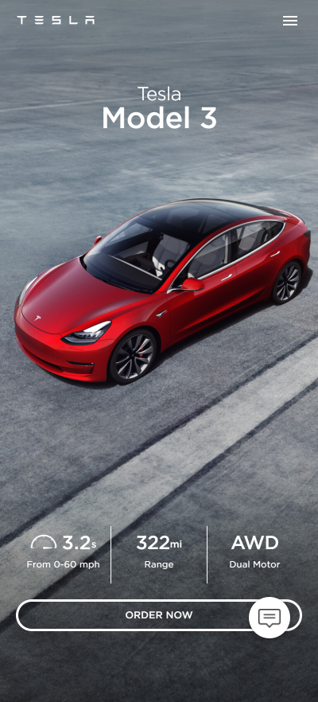

Alignment
Verizon
Visit the SiteJust about everything on this page seems to be aligned to the left. By doing so, it is easy to find where something will belong on the page. The alignment also creates a clean design.
Visual Hierarchy
Tesla
Visit the Site
Tesla has first called your attention to their bright red car popping out on the monochromatic background, then inform you that this is their Model 3. Finally they call your attention to an Order Now button, and along the way there, show you the specs of their product.
White Space and Clean Design
Apple
Visit the Site
Apple has long been one for white space and clean design. This clean web design is catered to those they serve as their website foreshadows the products sleek and easy to use design. I believe they used an immense amount of white space in the screenshot shown above because it makes it seem as the MacBook Air is indeed floating in the air.